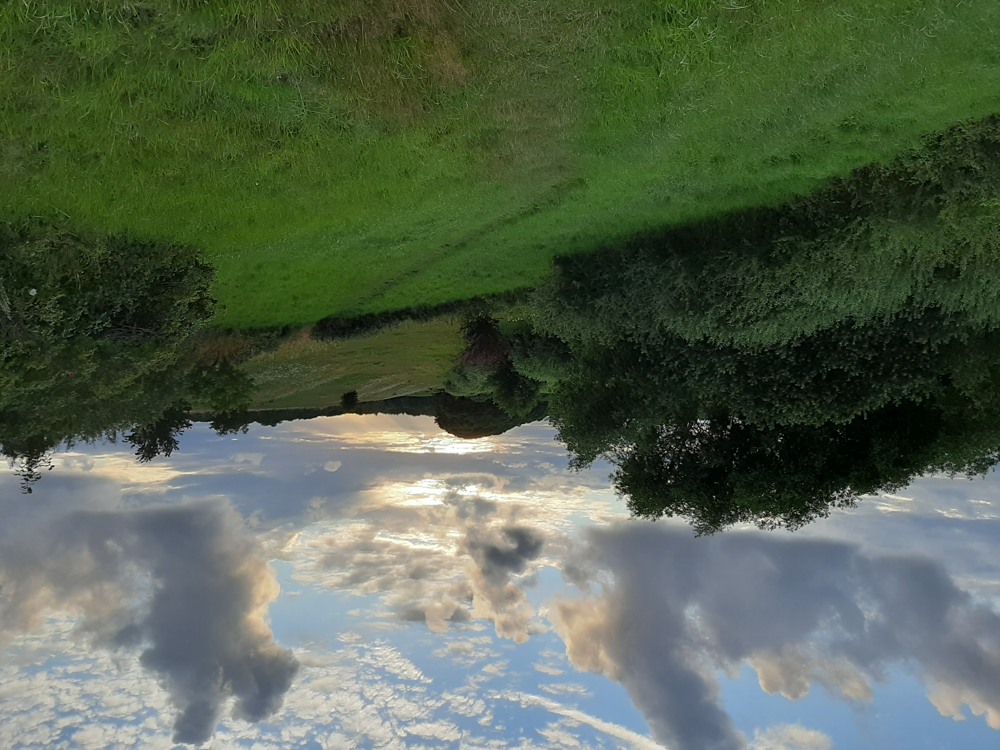
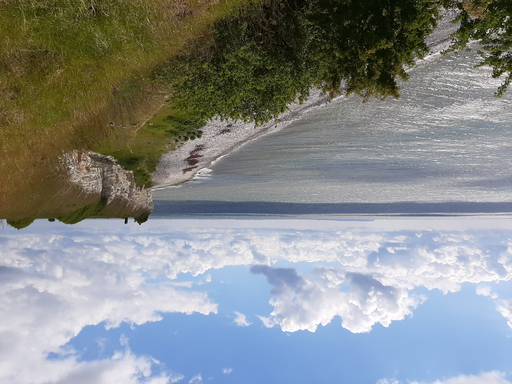
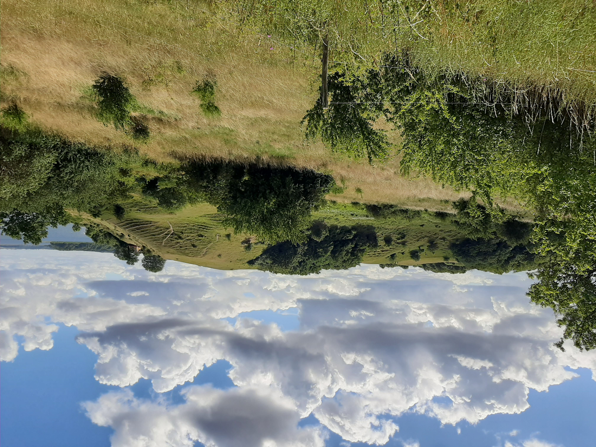

Jeg hededer Gry Byrge Hovmand og jeg er 48 år.
Jeg er uddannet fysuoterapeut og har arbejdet som fysioterapeut i 6 år.
Jeg har valgt at tage multimediedesign uddannelsen fordi
jeg gere vil kombinere mine interessser med redskaber fra multimediedesign
for at kunne designe hjemmesider til virksomheder og måske min egen.
Link til mit C.V.
Fritidsinteresser: jeg tegner, maler og fotograferer.
Ejby
Arresø
Klint
Ejby aadal